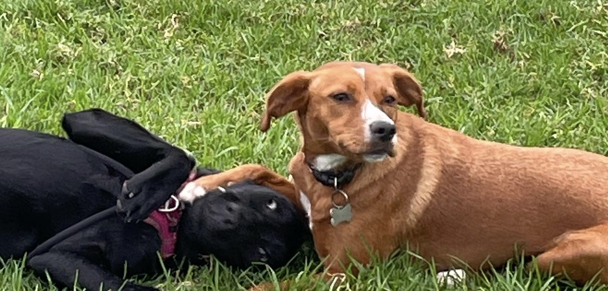

Why One-on-One Dog Walking is Better
At The Woof of Walk Street, we believe in ethical dog walking — one dog at a time. Unlike pack walks, your dog gets our full attention, ensuring safety and personalized care.
Every 45-minute session is devoted solely to your pup’s exercise, sniffing adventures, and playtime. No waiting in cars, no juggling multiple leashes — just quality time.